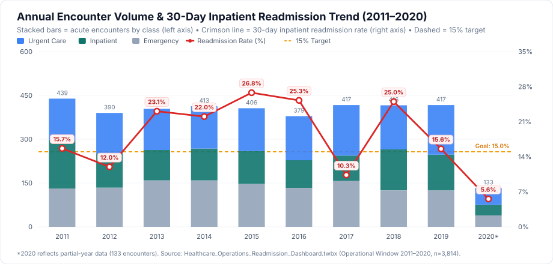
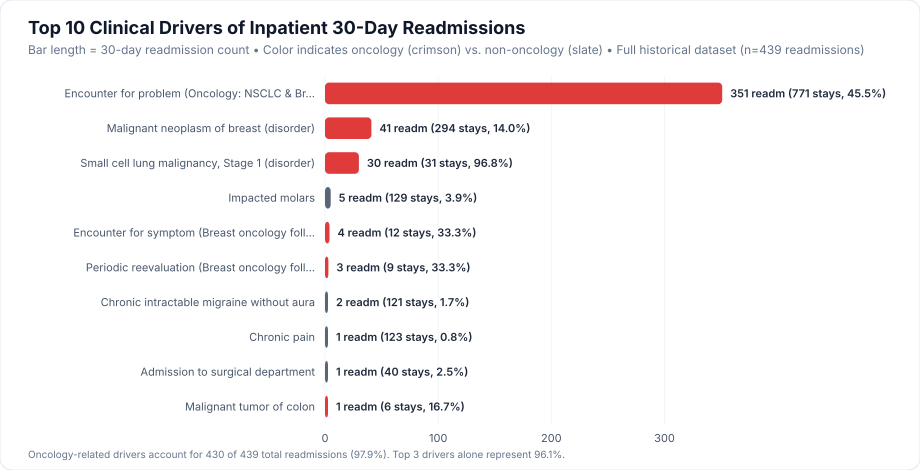
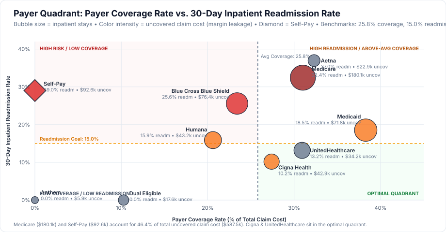

1. Annual Encounter Volume & 30-Day Readmission Trend (2011–2020)
Inpatient readmission rates breached the 15.0% target in 7 of 10 years, peaking at 26.8% in 2015 while urgent care expanded steadily.

2. Top 10 Clinical Drivers of Inpatient Readmissions
Oncology-related drivers account for 97.9% (430/439) of all inpatient readmissions; NSCLC & Breast oncology alone accounts for 80.0%.

3. Risk Tier × Age Cohort Readmission Heatmap
High-Risk Middle-Aged (39.0%) and High-Risk Senior (25.8%) generate 94.8% of all readmissions; Moderate-Risk Pediatric (20.4%) is the sole non-High-Risk signal.

4. Payer Quadrant: Coverage Rate vs. Inpatient Readmission Rate
Medicare ($180.1k) and Self-Pay ($92.6k) drive 46.4% of total margin leakage. Cigna Health and UnitedHealthcare occupy the optimal quadrant.

| Payer | Group | Encounters | Inpatient Stays | Readmissions | Readm. Rate | Coverage Rate | Margin Leakage |
|---|
5. Prioritized Strategic Action Plan
Targeted clinical, revenue-cycle, and data-governance interventions derived from the workbook diagnostics.
Oncology Transitional Care & Infusion Pathways
Deploy 72-hour post-discharge nurse navigation for NSCLC, Breast, and Stage 1 SCLC patients (97.9% of readmissions) and evaluate outpatient infusion alternatives to bring overall readmissions below 15%.
Self-Pay Presumptive Eligibility Screening
Screen Self-Pay admissions ($92.6k leakage, 0% coverage, 29.0% readmissions) for Medicaid eligibility (38.3% coverage) at intake to recover $30k–$35k+ while improving post-discharge care continuity.
Medicare HRRP Protection & BCBS Review
Focus High-Risk Senior care management on Medicare (32.4% readm, $180.1k leakage) to mitigate CMS penalties, and audit BCBS denials/contracts (23.4% coverage, 25.6% readm).
EHR Open-Encounter Closure Validation
Automate 30-day open-encounter alerts to eliminate extreme LOS outliers (5 records spanning 74–20,215 days that distort raw inpatient LOS from 1.09d to 18.04d).